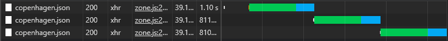
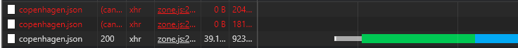
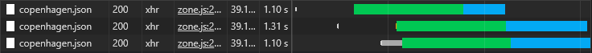

<section>
  <div class="block" data-type="text" data-name="title" style="left:102px;top:43px;width:1076px;height:auto;z-index:10">
    <h2>switchMap, mergeMap, exhaustMap and concatMap</h2>
  </div>
  <div class="block" data-type="text" data-name="text-1" style="left:160px;top:84px;width:600px;height:auto;z-index:11;text-align:left">
    <p>switchMap</p>
  </div>
  <div class="block" data-type="text" data-name="text-2" style="left:160px;top:263.96px;width:600px;height:auto;z-index:12;text-align:left">
    <p>concatMap, exhaustMap</p>
  </div>
  <div class="block" data-type="image" data-name="image-1" data-keep-ratio style="left:160px;top:308.628px;width:1075.2px;height:100.663px;z-index:13">
    
  </div>
  <div class="block" data-type="image" data-name="image-2" data-keep-ratio style="left:160px;top:126.56px;width:1075.2px;height:100.8px;z-index:14">
    
  </div>
  <div class="block" data-type="text" data-name="text-3" style="left:160px;top:461.96px;width:600px;height:auto;z-index:15;text-align:left">
    <p>mergeMap</p>
  </div>
  <div class="block" data-type="image" data-name="image-3" data-keep-ratio style="left:160px;top:509.543px;width:1075.2px;height:96.4174px;z-index:16">
    
  </div>
  <aside class="notes">Set network to slow 3G

Use the refresh button.

Use playgroundsSwitchmap$ instead of playgroundsDelay$ in rxjs-way-refresh.component.ts:45

If time allows:
 - exhaustMap: Completes the previous call, before reacting to new calls
 - concatMap: Queues new calls and executes them sequentially in the order they were received</aside>
</section>
